|
Download high resolution by ftp |
Histological section of zebrafish with EAIF. Note extensive, chronic
inflammation in ovaries (demarcated by arrows).
E = egg |
26 Sep 2002
M.L. Kent, J.M. Spitsbergen, J.M. Matthews, J.W. Fournie* and M. Westerfield
Zebrafish
International Resource Center
* US Environmental Protection Agency, Gulf
Breeze, Florida (fournie.joh@epamail.epa.gov)
TABLE OF CONTENTS |
1. Introduction
2. General Diagnostics and Necropsy Protocols
a. History
a. Mycobacteriosis (Fish TB)
a. Velvet Disease (Piscinoodinium)
5. Metazoan Parasites – Capillariasis
6. Non-infectious or Idiopathic Diseases
a. Nephrocalcinosis
a. Copper Toxicity
a. Current Studies
I. Seminoma
II. Intestinal Carcinoma
III. Utlimobranchial Tumors
III. Thyroid Neoplasia
IV. Hepatic Neoplasia
V. Spindle Cell Sarcomas
c. Diagnosis
d. Control and Treatment
9. References
10. Appendix – Recipes and Protocols
a. Davidson’s fixative
Although zebrafish have become an extremely important research model, relatively little is known about the diseases that affect this species when held in captivity. Indeed, severe health problems in zebrafish research colonies could seriously jeopardize many millions of dollars in research, and some researcher’s facilities have experienced devastating, acute mortalities in their zebrafish colonies. Moreover, persistent, but less severe, infections have plagued several facilities. As with other laboratory animals used in research, it is imperative to conduct studies with disease-free, healthy zebrafish. Unlike rodent models, where there are many certified specific pathogen free (SPF) strains, we have just begun to develop SPF stocks of zebrafish. To aid in this endeavor, we are developing sensitive diagnostic tests for the serious pathogens.
The purpose of this manual is to provide an overview of the common diseases of zebrafish as they occur in research facilities. For each disease, we provide information on the characteristics (e.g., pathological presentation), methods for diagnosis, and suggestions for control and treatment. In addition, methods for conducting disease investigations and for collecting and shipping samples to a diagnostic laboratory for further analysis are included. For additional information about zebrafish disease research and our diagnostic service.
The small size of zebrafish present some unique challenges, and at the same time advantages for conducting necropsies and other diagnostic tests. Our knowledge of the diseases of zebrafish is relatively limited compared to those of food fishes reared in aquaculture. Until recently, most diseases of zebrafish that have been documented are those that are common problems in ornamental freshwater fishes (e.g., Piscinoodinium). With other fish species, it was not until they were recognized as commercially important and reared in captivity in large numbers did specific diseases become recognized.
Viral diseases are often devastating in aquaculture enterprises. However, as many viruses are very host specific, they are usually first identified only when a fish species is reared in large numbers in captivity. Identification of "new" viral diseases in fishes often requires establishment of new cell lines from the host under investigation. At present, viruses are not recognized as causes of disease in zebrafish, and thus zebrafish are not routinely examined for viruses. However, zebrafish cell lines are available.
Likewise, with bacterial infections, aside from mycobacteriosis, only common, opportunistic Gram negative bacteria such as Aeromonas hydrophila and surface infections by gliding bacteria are occasionally encountered. Given the above, our primary approach for diagnostics has been histopathology. This allows for interpretation of pathological changes at the tissue and cell level. Moreover, the small size of zebrafish allows for preparation of the entire fish on one slide.
|
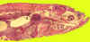
Download high resolution by ftp |
Sagittal section of whole zebrafish with mycobacteriosis G = granulomas in the kidney and viscera due to the bacterial infection |
The mere presence of a pathogen in a sick fish does not necessarily mean that it is the cause of the disease. It is important, therefore, to conduct a thorough investigation, beyond just detecting the presence or absence of known pathogens, to determine the cause of the disease. Histological examinations, in addition to gross necropsies and in vitro culture of microorganisms, are often required to determine the association of the observed pathogens in the disease being investigated.
Diagnosis of a disease begins at the research facility. Some of the most crucial data are collected by the staff maintaining the fish by thorough record keeping and careful observations of affected fish. The following information is important for disease diagnosis and implementing control strategies. Astrofsky et al. (2002) recently published a guide for conducting clinical investigations on laboratory zebrafish.
To assist with obtaining an accurate diagnosis, the following information should be obtained: origin (stock and strain), previous disease problems in the affected population, and husbandry conditions (e.g., water hardness, diet, medication history, system design, and mortality rate).
Fish behavior may be useful for indication of an emerging disease and some behavioral changes are useful for presumptive diagnoses. For example, if fish are flashing (rubbing on the sides of tanks), this may indicate that they are infected with external parasites. Other indications of disease include cessation of feeding, lethargy, and abnormal position in the aquarium (e.g., at surface or at the bottom). Abnormal respiratory pattern may indicate gill damage, and whirling or spiraling swimming often indicates neurological damage.
Examinations should be conducted on diseased fish that are collected while still alive (moribund). It is important to determine the primary cause of mortality and to differentiate this from secondary or opportunistic pathogens that may have taken advantage of already diseased fish. To accomplish this, several affected fish should be examined whenever possible. It is also useful to include apparently normal, asymptomatic fish so that early pathological changes and the underlying cause of morbidity can be determined. Dead fish may be suitable for some parasitological examinations and for observing obvious macroscopic pathological changes. However, bacteriological examinations conducted on dead fish can yield misleading results, and many histological changes are obliterated by post-mortem autolysis.
The small size of zebrafish makes conducting a necropsy somewhat tedious, but with patience and practice this can be efficiently accomplished with the aid of a stereo dissecting microscope. Note surface abnormalities (e.g., frayed fins, cloudy eyes, ulcers, skin discolorations, parasites, and tumors). Prepare wet mounts of the skin mucus and a few scales by scraping the surface of the fish with a coverslip and placing the coverslip on a glass slide. Some water may be added to the preparation so that the area between the slide and the coverslip is completely filled with liquid. Examine the wet mount with a compound microscope, starting with low power. Reducing the light and lowering the condenser will produce higher contrast, which will make microscopic parasites and other pathogens more visible.
Remove the operculum. Note color of gills (pale gills usually indicate anemia). Check for parasites, cysts, excessive mucus, and hemorrhages with a dissecting microscope. Prepare a wet mount by removing a few filaments with scissors, placing the filaments in a large drop of freshwater on a glass slide, and overlaying with a coverslip. Examine for small parasites, fungi, and bacteria using a compound microscope.
Open the visceral cavity. Note if ascites, hemorrhages or other abnormalities are present. Expose the kidney by removing the swim bladder and note any kidney abnormalities. Many diseases cause enlargement or discoloration of the kidney, but this may be difficult to see in zebrafish due to their small size. Examine the heart for any abnormalities. Multiple, whitish cysts in the visceral organs is suggestive of Mycobacterium infections. Examine squash preparations of organs with a compound microscope to detect encysted parasites, fungi or granulomas. Squash preparations are made by removing a small piece of tissue, and gently squashing it between a slide and coverslip so that a thin preparation suitable for examination with a compound microscope or dissecting microscope is made.
Leishman's Giemsa or Diff-Quik (Dade Behring AG, Newark, DE) stained imprints of kidney, or other affected organs are useful for detection of protozoa and bacteria. Remove a piece of tissue, blot on clean paper towel to remove most of the blood, and lightly touch the cut surface of the tissue on a clean glass slide. Several imprints from the same piece of tissue can be made on one slide. Air dry the preparation for approximately 1/2 h. Fix the slide for 5-10 min in absolute methanol for Giemsa stains or the fixative provided with the Dif-Quik kit. The slide can then be stained with Giemsa or Diff-Quik, or shipped to a diagnostic laboratory. For Mycobacterium, imprints and tissue smears are stained with acid fast stains.
It is critical to fix fish for histology as soon as possible after fish are killed to avoid post-mortem changes. If possible, do not use dead fish because significant autolytic changes may occur in 15-20 min after death. Fish are preserved in formaldehyde based fixative such as Davidson’s or Dietrich’s solutions for histology. Open the visceral cavity of the fish by cutting and removing a small section of the abdominal wall. Then place fish whole in the fixative at approximately 1:20 (v/v) tissue to fixative. We have found Dietrich’s or Davidson's solution to be the best all around fixative for processing whole zebrafish for histological examination. The entire fish can be processed (usually cut in sagittal sections) and representative organs can be visualized in multiple sections on one or two slides.
Under special circumstances, electron microscopical examinations may be warranted. The general principles for histology applies for collecting specimens for electron microscopy, but freshness of tissues at fixation and proper infiltration of tissues is even more critical. Therefore, small pieces of tissue should be minced in cold glutaraldehyde based fixative into pieces about 2 mm3 maximum. The fixed tissue is stored overnight in this solution, then transferred to the appropriate buffer solution. Samples in EM fixatives and buffers should be refrigerated. There are many EM fixatives and buffers. The Appendix provides a recipes for Millonig’s buffer and fixative. Transmission electron microscopy can be performed with limited success on tissues fixed in neutral buffered formalin, but is very poor with acidic fixatives, such as Davidson's or Dietrich’s solutions.
Some bacterial infections, such as surface gliding bacteria and Mycobacterium spp., can be identified by simple Gram or acid fast stains (e.g., Ziehl Neelsen). However, the diagnosis of other bacterial diseases requires isolation of the bacteria in culture. In this case, live fish should be delivered to the laboratory, but this may not be practical in some situations. For this reason, methods for obtaining initial cultures are provided below. The bacterial cultures can then be sent to a laboratory for complete identification.
Use only freshly sacrificed fish for bacteriological examinations as dead fish from the tanks are essentially worthless. Disinfect the surface of the fish with 70 % ethanol. Flame-sterilize the dissecting instruments. Two methods are used for obtaining inocula from the kidney. For the visceral method, open the visceral cavity by making an incision in abdominal wall. Make sure not to cut into the gastrointestinal tract. Then push aside the swim bladder with flame-sterilized forceps and insert a sterile swab or loop into the kidney. For the dorsal method, enter the kidney by lateral incision dorsal to the kidney (i.e., near the lateral line). Streak the specimen on Tryptic Soy Agar or blood agar bacteriological plates, seal the plates, keep at a room temperature, and send the plates to the microbiology laboratory for further diagnosis.
For gliding bacteria (Cytophaga, Flexibacter and Flavobacterium spp.), we recommend Cytophaga Medium. Although the lesions may exhibit massive numbers of gliding bacteria, other bacteria (e.g., Aeromonas spp.) may overgrow the former. Therefore, the best way to obtain pure cultures of gliding bacteria is to homogenize the infected tissue (e.g., gills, skin and muscle) in sterile water, and inoculate plates in serial log dilutions.
Gram-stained preparations may reveal bacteria when they are numerous in infected tissue. Smear or imprint suspect tissues thinly on a glass slide, air dry and fix the slide by gently heating the slide over an open flame for 3-5 seconds. Gram stain kits are available from scientific supply houses and include instructions for their use.
As with bacterial diseases, isolation of viruses in culture may be required to diagnose a viral disease, and culture is best conducted on tissues collected from freshly killed fish. If this is not practical, the fish should be refrigerated for no longer than 24 h before examination. As a last resort, fish for virus examination can be frozen. The specimens are then transported to a qualified fish virology laboratory. At present, there are no known viral diseases of zebrafish colonies. However, as has been the case with other relatively new forms of fish culture, as fish health researchers thoroughly investigate outbreaks and incorporate tissue culture in their examinations, it is very likely that "new" viral diseases will be recognized in zebrafish.
DNA-based diagnostic tests utilizing polymerase chain reaction (PCR) are becoming increasingly common in fish health diagnostics because they are very sensitive and specific. With zebrafish, we have developed a PCR test for the neural microsporidian Pseudoloma neurophilia, and Astrosky et al. (2000) used PCR tests to identify and differentiate different species of Mycobacterium. Because of the extreme sensitivity with PCR, great care should be taken to avoid cross contamination between samples. Bleach instruments between samples. Samples are either frozen immediately or preserved in ethanol. Mixed results are achieved when using formalin preserved tissues for genotypic analysis. Moore et al. (2001) found that decalcification procedures, which are routinely used when processing zebrafish for histology, are particularly detrimental for molecular analyses.
It is important that you contact the diagnostic laboratory prior to shipping live fish. If possible, food should be withheld from fish for 24 hours prior to packaging and shipping. The water used for shipping should be held separate from the fish before packaging. Sodium chloride can be added to the shipping water at a rate of 2 ppt (2.0 g NaCl per liter water) to help reduce osmotic stress. Fill shipping bags 1/3 full of clean water and gently place fish into the bag. The bag should be sealed such that an approximate ratio of 1/3 water, 2/3 air is maintained. Bags are typically sealed by twisting the top and then folding the twisted end over and securing it onto itself with a rubber band. The bag is then placed within a second bag and sealed in the same manner. Place the bag in an insulated shipping container. Live specimens should be shipped early in the week to ensure arrival and adequate processing time.
It is not always possible to obtain live or fresh specimens. If only dead fish can be provided for laboratory examination, they should be refrigerated and examined within 24 h. If fish cannot be delivered to a laboratory within 24 h, then fish should be preserved by fixation in tissue preservatives for histology unless otherwise indicated. Each method of preservation has certain advantages and disadvantages, as indicated in following table.
. For shipment of preserved fish, replace fixative with 70% alcohol and soak overnight. Drain off excessive fluids, wrap tissues in alcohol-soaked paper towels, and seal in a leak-proof container.Transport of Tissues in Fixative
Transport of Frozen Fish. Freeze fish in a plastic bag and ship in an insulated container with ice packs.
Transport of Refrigerated Fish.
Place fish in a plastic bag and surround the bag with ice or ice packs. Ship in a leak-proof, insulated container.
| Preservation methods of fish tissues and their uses in fish disease diagnostic examinations. +++ = optimal; ++ = satisfactory in most cases; + = suboptimal, can be used if no other tissue available; 0 = useless. | ||||
| Live | Iced | Frozen | Preserved * | |
| Parasitology | +++ | ++ | + | + |
| Bacteriology | +++ | + | + | 0 |
| Virology | +++ | ++ | + | 0 |
| Toxicology | +++ | ++ | +++ | 0 to +++ |
| Histology | +++ | + | + | +++ |
| Electron Microscopy | +++ | + | 0 | +++ |
| PCR | +++ | ++ | +++ | +++ |
| * Preserved in formalin-based fixative (e.g., Dietrich’s Fixative) for histology, glutaraldehyde-based fixative for electron microscopy, 95% ethanol for PCR testing. | ||||
Chronic, systemic bacterial infections by certain acid-fast bacteria are common in aquarium fishes, and the disease is often referred to as fish tuberculosis. Several species in the genus Mycobacterium have been associated with disease in fishes, including M. marinum, M. abscessus (= M. chelonae subsp. abscessus), and M. fortuitum. Usually the disease is chronic with low level mortality, but in certain circumstances, infections may be very acute and result in massive epizootics in zebrafish colonies. Factors that are most responsible for the differences seen in the severity of outbreaks in fish TB have yet to be determined. It is not know if highly virulent strains or species (e.g., M. fortuitum) cause the acute outbreaks, or if the outbreaks occur in fish that are immunocompromised by other factors, such at poor water quality, excessive crowding, etc.
Mycobacterium spp. of fishes can infect humans. In most cases, the infections are confined to the extremities, and though not usually life-threatening may require aggressive antibiotic treatments to resolve (Kern et al. 1989; Shih et al. 1997; Hoyen et al. 1998). However, these infections may be lethal to immune compromised individuals (Lessing et al. 1993). Considering the zoonotic potential of Mycobacterium spp. from fishes, those handling aquarium fishes, including zebrafish, should wash their hands after coming in contact with water containing fish, and avoid exposing open lesions to aquarium water and fishes.
Clinical Signs and Gross Pathology. Clinical and macroscopic changes associated with Mycobacterium may be variable, dependent upon the site and extent of the infection, and on the "chronicity" of the infection. Clinical signs include lethargy, anorexia, and emaciation. Fish may exhibit ulcers, hemorrhage or hyperemia around the head (similar to Gram negative septemicas), raised scales, frayed fins, and palor of the skin or gills. A hallmark macroscopic change is the presence of multiple, white nodules in various visceral organs. These are visible by close examination of organs with a dissecting microscope, but may be hard to find in small fish, such as zebrafish.
Astrosky et al. (2000) recently described various forms of the disease as they occur in zebrafish. Infected fish showed decreased overall reproductive capabilities, as well as characteristic changes such as dropsy (generalized edema with swollen abdomens) and frank ulcers of the skin.
|
Download high resolution by ftp |
Mycobacterisosis. A. Multiple granulomas (which appear as white spots) in the head kidney of a green knifefish with severe mycobacteriosis. B. Wet mount images of granulomas. Numerous granulomas in tissue squash preparation. Granulomas often contain macrophages with pigment (e.g., melanin), but the former may be differentiated from melano- macrophage centers (which are normal in the spleen and kidney) by the presence of a capsule (arrows). |
Microscopy: In "typical" fish TB (i.e., the chronic form), histological examination reveals numerous granulomas, often with necrotic centers, throughout the visceral organs. These can be seen in wet mount preparations, but can be confused with encysted parasites. Staining of these tissues with an acid-fast stain (e.g., Ziehl-Neelsen) will often reveal acid fast bacilli in the lesions. In more aggressive infections associated with rapid mortality we have seen the massive accumulations of macrophages replete with bacteria throughout the viscera and occasionally extending into the muscle. Some of these cases are very acute and exhibit few, if any, granulomas.
|
Download high resolution by ftp |
Mycobacterium spp. in
imprints stained with Ziehl-Neelsen.
A. Acid-fast (red) bacilli. B. Imprint showing Mycobacterium bacilli (arrows) in pigment-containing macrophages (M = melanin granule). |
|
Download high resolution by ftp |
Histology of Mycobacterium infections. A. Low magnification of severe infection with several granulomas (G) in visceral cavity and free colonies of Mycobacterium sp. (arrows) in spinal cord. Bar 100 ìm. H&E. B. Typical granulomas with acid-fast bacilli (arrow). Bar = 10 ìm. Ziehl-Neelsen. C. Acid fast stain of same section as "A" showing acid-fast positive colonies in spinal cord. Ziehl-Neelsen. D. In zebrafish, we occasionally see aggressive, diffuse infections. Instead of well-organized granulomas, the lesions present as massive proliferation of phagocytes in the viscera, with diffuse distribution of bacteria (arrows). P = pancreas. Ziehl-Neelsen. |
Diagnosis
. Preliminary diagnosis is achieved by observing multiple granulomas in visceral organs in either wet mounts or histological sections. These may also be cause by fungal or parasitic infections. Confirmatory diagnosis is requires visualization of acid fast bacilli in either histological sections or in tissue imprints. Some Mycobacterium species are relatively difficult to grow in culture, and thus this procedure is infrequently employed with fish. PCR tests for screening for the presence of the causative agent have been described (Colorni et al. 1994; Astrofsky et al. 2000). Such tests, while extremely sensitive, usually do not provide information on disease status or the severity of infection, but may be useful for screening for carrier/subclinical infections.Control and Treatment. The infection is usually very difficult to eradicate in fish culture systems with antibiotics. However, Conroy and Conroy (1999) reported that kanamycin at 50 ppm with 4 doses 2 days apart apparently controlled the disease in guppies. Boos et al. (1995) treated firemouth cichlids and Congo tetras orally with rifampicin and tetracycline with some success. Nevertheless, depopulation of affected tanks and avoiding cross contamination has been the most effective way for controlling the infection in aquarium fishes (Astrofsky et al. 2000).
Because the disease is rather insidious, the infection is wide spread in aquarium fishes, and treatment with antibiotics is difficult, the best approach is to avoid the infection. This is accomplished by strict quarantine procedures and understanding a thorough history of the stocks introduced into research facilities. In addition, optimizing water quality and husbandry conditions will reduce the likelihood of epizootics occurring when a few carry fish are present in the population.
Several species of gliding bacteria (i.e., Flavobacterium, Flexibacter or Cytophaga spp.) caused surface infections in freshwater and marine fishes. One of these diseases, bacterial gill disease (BGD), is an infection caused by a variety of these bacteria, precipitated by crowding and poor water quality. Therefore, BGD is also called "environmental gill disease". Two gliding bacteria, Flavobacterium columnare and F. branchiophilum, are species specifically incriminated with the disease in freshwater. Other bacteria may cause or be secondarily involved with the lesions. Key predisposing factors are high organic loads and possibly high ammonia in the water. Therefore, the condition is often found in high production trout farms. With zebrafish, we have seen BGD following shipment in which the fish were in transit for a long time.
Clinical Signs and Gross Pathology. Typical of most gill diseases, fish exhibit labored breathing and may accumulate at the surface with BGD. Fin and tail infections (known as fin and tail rot), is characterized by erosion of the fins. Infected skin usually appears white due to loss of the overlying epidermis and exposure of the dermis.
Microscopy. Wet mount examinations of infected gills reveal fused secondary lamellae due to epithelial hyperplasia. Masses of filamentous bacteria are observed on the surface of the gills. Likewise, masses of bacteria are seen in wet mount preparations of infected skin or fins. Phase contrast microscopy is useful for visualization of the bacteria. Histological sections reveal severe epithelial hyperplasia of the gills and occasionally necrosis. Careful examination usually reveals mats of bacteria on the gill surface.
|
Download high resolution by ftp |
Bacterial Gill Disease A. Wet mount of gills showing severe, diffuse
epithelial hyperplasia. Proliferation of epithelial cells has fused
primary lamellae (P).
B. Histological section of gill with BGD. Arrow = masses of bacteria. C. Wet mount preparation, phase contrast showing numerous filamentous bacteria associated with gill. |
|
Download high resolution by ftp |
Tail Rot. Gliding (filamentous) bacteria also cause skin and fin infections, resulting in diseases such as fin or tail rot. Note frayed tail fin and whitish appearance of the tail region due to loss of the epithelium. |
Diagnosis
. Gliding bacteria infections are usually diagnosed by observing masses of bacteria from the infected tissue. With BGD, the gill surface is associated with excessive mucus production and hyperplasia of the gill epithelium. All of these changes can be visualized in wet mount preparations of the infected tissues. Histology is useful to demonstrate pathological changes of the gills and the extent of invasion by the bacteria in the skin.Control and Treatment. The best way to avoid BGD and fin and tail rot is to avoid overcrowding and maintain proper water quality. When shipping, assure that fish are not feed for a few days before transport, maintain lower densities in shipping bags, and select the fastest route of travel.
The most common chemical treatment for BGD in salmonids has been chloramine T at about 6-15 ppm as a 1h bath (Bowker and Erdahl 1998). Repeated treatments may be required. Lumsden et al. (1998) compared this drug with hydrogen peroxide for treating experimental infections in trout, and ultimately recommended 100 mg/L hydrogen peroxide (1 h baths) as an effective treatment as well. However, we have not tested hydrogen peroxide on zebrafish.
Diseases caused by protozoans are common problems in aquarium fishes, and several have been observed in zebrafish. Ichthyophthirius multifiliis (the cause of "Ich" or white spot disease") and Piscinoodinium pillulare (the cause of freshwater velvet disease) are very common in warm water captive fishes. The latter is recognized as a cause of disease in zebrafish held in research facilities. Microsporidia are generally more host specific and one of these, Pseudoloma neurophilia, is very common in zebrafish from research facilities and pet stores (de Kinkelin 1980; Matthews et al. 2001).
Velvet Disease (Piscinoodinium pillulare)
Piscinoodinium pillulare, the cause of velvet disease, is a yellowish, parasitic dinoflagellate in which one stage infects the skin and gills of fish. The parasite can multiply very rapidly in aquaria and will rapidly kill fish. This is a common pathogen of ornamental fishes. The dinospore stage infects fish, and transforms into a trophont stage that attaches to the surface, especially gills, and apparently feeds on the host’s epithelium. After several days, this stage leaves the host and forms a tomont. This off-host stage undergoes several divisions, resulting in 256 infective motile dinospores which go on to infect other fish. The life cycle is completed in about 2 wk under optimal conditions (ca 23-26 oC).
Clinical Signs and Gross Pathology. Heavily infected fish exhibit lethargy, may hang near the surface of the water column, and exhibit labored breathing. Fish may exhibit a greyish to rusty color sheen on the surface.
Microscopy. Wet mount examination of the skin or gills reveals numerous, oval, opaque non-motile trophonts (about 9-12 X 40-90 ìm). In histological sections, Piscinoodinium appears as oval organisms on the gill and skin surface, with numerous cytoplasmic (often refractile) granules and a large nucleus. Infections of the gills are associated with prominent epithelial hyperplasia. Similarly, skin infections result in severe hyperplasia and erosion of the epithelium.
|
Download high resolution by ftp |
Histological section of gills section heavy infected with Piscinoodinium
(X).
Arrow = early, small stages. |
Diagnosis. The infection is diagnosed by observation of the trophonts in either wet mounts or histological sections. For the former, Piscinoodinium is distinguished from many other surface-infecting protists by it’s lack of motility.
Control and Treatment. We do not have personal experience treating Piscinoodinium infections with zebrafish. Noga (1996) recommended prolonged immersion in salt at 1 teaspoon/5 gal. Very heavy, life-threatening infections may be treated with a quick (1-3 min) bath in full strength sea water (35 ppt). As with Ich, the presence of off-host developmental stages should be considered when implementing a treatment regime. Therefore, it is best to remove all the fish, treat them in a new aquarium, and disinfect the original tank.
Neural microsporidiosis in zebrafish was first reported in 1980 in France (de Kinkelin 1980). The parasite has now been identified in zebrafish at many research and commercial facilities, and was recently assigned to a new genus and species, Pseudoloma neurophilia by Matthews et al. (2001). The infection appears to be linked to severe emaciation (often referred to as ‘skinny disease’), but its precise role (primary cause or secondary opportunist) has yet to be resolved. The infection is also found routinely in normal, healthy appearing fish. In a preliminary prevalence study at the University of Oregon Huestis Hall facility, 97% (29/30) of "skinny" fish and 30% (10/30) of normal, healthy appearing adult fish have microsporidial spores detectable by wet mounts of dissected spinal cords, and the former had heavier infections.
Microsporidia are obligate intracellular parasites with a complicated life cycle. The life cycle concludes with the production of an infectious and resistant spore, which is the only stage of the parasite that can live outside of the host cell. With most microsporidia, transmission occurs via the ingestion of the infective spore stage, and we have found the infection in exposed fish as soon as 8 wk after feeding infected tissues. There have also been reports of vertical transmission in other microsporidia of both vertebrates and invertebrates (Bandi et al. 2001; Dunn et al. 2001). We detect the spores of Pseudoloma in the ovaries and within eggs of zebrafish, and the role of vertical transmission of Pseudoloma in the spread of the infection is currently under investigation in our laboratory. Enhanced methods for diagnosis and treatment of the infection, and the link between the microsporidian and skinny disease are also topics that we are studying.
Clinical Disease and Gross Pathology. Emaciation and spinal curvature, such as scoliosis, are common in infected fish.
Microscopy. The primary site of infection is the central nervous system (spinal cord and hindbrain). Spores and associated inflammation are also noted occasionally in the skeletal muscle surrounding vertebrae and ventral nerve roots.
| 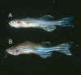
Download high resolution by ftp |
Clinical signs of microsporidosis.
A. emaciation ("skinny disease") and B. scoliosis. |
| 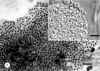
Download high resolution by ftp |
Pseudoloma from brain.
Giemsa stain
A. and wet mount with Nomarski’s optics B. Bar = 10 ìm. |
| 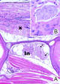
Download high resolution by ftp |
Pseudoloma in
histological sections.
A. Sagittal section showing spinal cord. X = xenomas in spinal cord. Xenomas also occur in ventral nerve roots (arrows) with associated inflammation (In). B. High magnification of xenomas in spinal cord. |
| 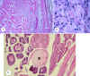
Download high resolution by ftp |
Pseudoloma in
histological sections – other sites of infection.
A. Low magnification showing inflammation in skeletal muscle. Bar = 100 ìm. B. High magnification of muscle showing spores (arrows) in phagocyte. C. Egg filled with Pseudoloma spores (X). |
| 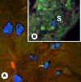
Download high resolution by ftp |
Fungi-Fluor stained histological sections. A. Low magnification showing numerous spores (stained blue with DAPI filter) in spinal cord xenomas (arrow). B. High magnification of spores (S) in ovaries. |
Diagnosis
. The infection can be detected in wet mounts of the central nervous system that have been carefully dissected from infected fish. Because this is tedious and laborious, histology is the routine method by which the infection is observed. Spores are ovoid to pyriform, with a prominent posterior vacuole, and average 5.4 x 2.7 Fm. The microsporidium produces xenomas within the spinal cord and hindbrain of fish, and xenomas contain sporophorous vesicles with up to 16 spores. Sporoblasts and presporoblast stages (probably sporonts) are found rarely in small aggregates dispersed randomly throughout xenomas. Fungi-Fluor (Polysciences, Warrington, PA fluorescent stain binds nonspecifically to beta-linked polysaccharides found in cells containing chitin. As chitin occurs in spore walls of microsporidia, this stain is excellent for demonstrating spores in either tissue smears or histological sections. Weber et al. (1999) describes a related stain (Calcofluor) and other staining techniques for the identification of microsporidia.Control and Treatment. Fumagillin has been widely used as an oral treatment for fish microsporidosis, usually with good success (see review by Shaw and Kent 1999). Fumagillin was first developed for treating Nosema apis infections in honey bees. Kano et al. (1982) reported that fumagillin was effective against the microsporidium H. anguillarum in eels (Anguilla japonica). Since this first report on treating microsporidiosis in fish with fumagillin, the drug has been used to treat N. salmonis infections in chinook salmon (Hedrick et al. 1991) and Loma salmonae infections in chinook salmon (Kent and Dawe 1994). However, this has not been tested with zebrafish microsporidiosis. The best method for control as this time is to remove and euthanize all emaciated and moribund fish as soon as possible to prevent cannibalism and further transmission.
Microsporidian spores may be resistant to disinfectants (Shaw et al. 1999), and at present it is not known if the levels of chlorine routinely used to surface disinfect eggs (chlorine 25 ppm for 5 min) will kill the spores. Moreover, we have observed eggs filled spores of Pseudoloma. The spores within intact eggs could be protected from chlorine, even if this concentration is effective for killing spores. It is recommended that all nonviable, unfertilized eggs be removed prior to the bleaching procedure.
Ich, caused by the ciliate Ichthyophthirius multifiliis, is probably the most important disease of freshwater aquarium fishes. Fortunately, it has not been recognized as an important problem in zebrafish research facilities, but as essentially all aquarium fish are susceptible to the infection it warrants review here. Some similarities in the life cycle are shared by the Ich parasite and Piscinoodinium. Both have off-host encysted stages in which multiplication of organisms occurs, followed by free-swimming stages infecting fish. In contrast, Ich penetrates the epithelium, and thus makes it more difficult to eradicate with external baths or dips. Noga (1996) and Dickerson and Dawe (1995) provide reviews on Ich.
Clinical Disease and Gross Pathology. Fish with heavy infections exhibit excessive mucus production, labored breathing, and lethargy. A hallmark of the disease are white, raised nodules on the skin, hence another common name for the disease is "white spot".
|
Download high resolution by ftp |
Ichthyophthirius multifiliis. Sockeye salmon with numerous parasites (white spots) on skin. Courtesy of Garth Traxler. |
Microscopy. Wet mount preparations of the skin and gills reveals motile ciliates varying in size, from the initial infective stage (theront) of about 25 in length to the stage embedded under the epithelium reaching up to 1 mm in diameter. Histological sections reveal the parasite under the epithelium associated with severe epithelial hyperplasia. A large, horseshoe-shape macronucleus may be visible in wet mount or tissue sections.
|
Download high resolution by ftp |
Wet mount preparation of gill showing Ich ciliate under the epithelium (arrow). |
Diagnosis. Observation of active ciliates of variable size in wet mounts of the skin or gills is a good presumptive diagnosis. Definitive diagnosis is achieved by observing the distinctive macronucleus and observing parasites under the epithelium of the gills or skin.
Control and Treatment. Extensive literature is available on control strategies for Ich, and the most common treatment is an external bath with formalin. Usually fish are treated with formalin at about 1:4-5,000 formalin for 1 hour. Each fish species responds differently to formalin, and thus a few fish should be tested before applying the treatment to large numbers. The treatment must be carried-out diligently as the stages under the skin are somewhat protected from external baths. In other words, multiple treatments may be required. Furthermore, the entire system should be treated to destroy the off-host stages of the parasite, which may be detrimental to biological filters.
Metazoan Parasites - Capillariasis
Metazoan parasites (helminths and arthropods) are important causes of disease in captive fishes, including warm water species. Because zebrafish colonies usually use dechlorinated city water and are maintained in closed systems, metazoan parasites (particularly those requiring intermediate hosts) are not numerous in these facilities. Capillarid nematodes are one of the few metazoans that have been recognized as a problem in zebrafish facilities (Pack et al. 1995; Kent et al. 2002).
The species infecting zebrafish was first identified as Pseudocapillaria tomentosa by Dr. R. Overstreet, University of Southern Mississippi (pers. comm.), and the specimens that we have evaluated from zebrafish are consistent with this identification. Capillarids infect all classes of vertebrates, and are often pathogenic due to their invasive nature (Moravec 1987; Moravec et al. 1987a ). Many species have been described from fishes, including aquarium species (Williams and Jones 1994).
Pseudocapillaria tomentosa (junior synonym P. brevispicula) has a broad host specificity, infecting some 25 fishes in the family Cyprinidae and members of other orders such as Aguilliformes (eels), Gadiformes (cod fishes), Salmoniformes (salmon) and Siluriformes (catfishes) (Moravec 1987). Pseudocapillaria tomentosa was associated with mortality in captive tiger barbs (Puntius tetrazona) (Moravec et al. 1984) and related parasites cause disease in other aquarium fishes. Capillaria pterophylii has been recognized for many years as a common pathogen of captive angelfish and discus fish (Richenbach-Klinke 1952) and Capillostrogyloides ancistri is highly pathogenic to the bushymouth catfish Ancistrus dolichopterus (Moravec et al. 1987b). Lomankin and Trofimeko (1982) showed that oligochaetes (e.g., Tubifex tubifex) can serve as paratenic hosts for P. tomentosa in laboratory transmission studies. In the same study, they demonstrated that direct transmission in the absence of worms is also a route of infections. Recently, we confirmed that the parasite can be transferred from fish to fish in the absence of oligochaete worms, which demonstrates that the parasite can proliferate in zebrafish research facilities.
Clinical Signs and Gross Pathology. Heavily infected fish are often dark, emaciated, and lethargic. Necropsy may reveal liver enlargement and anemia.
Microscopy. Females of P. tomentosa are long (7-12 mm) and thin, and gravid worms are replete with the distinctive eggs that are visualized in wet mount preparations of the gut. Males are smaller, about 4- 7 mm in length. Histological sections reveal the worms within the gut wall and, at times, are associated with a severe cellutitis of the infected region The tissue reaction can be severe, diffuse and may extend through the entire visceral cavity. The infection also seems to predispose fish to intestinal neoplasms (Kent et al. 2002) – see Neoplasia.
Diagnosis. Identification of capillarid nematodes is most easily accomplished by the presence of unique eggs, which are oval and contain distinctive bipolar plugs. Precise identification to the species level requires careful examination of the male sexual organs, which are rather diminutive in Pseudocapillaria spp. Females of P. tomentosa are about 7-12 mm, males about 4-7 mm. To date, the only nematode infection that we have identified in zebrafish from research facilities is P. tomentosa.
Control and Treatment. Oligochaete worms may be a source of the infection, and thus should be avoided as food, particularly if their source is unknown. As direct transmission occurs between fish, the infection can spread within a population if not controlled. If fish are not highly valuable, the most appropriate choice would be to eliminate the infected population. At present, the infection is not wide spread in research facilities, perhaps due to bleaching of eggs and quarantine procedures.
Ivermectin is a very effective antihelminthic for many nematode and arthropod infections in terrestrial animals, and has been employed for treating nematode infections in fishes (Heckman 1985). Therefore, ivermectin should be considered as a possible treatment for P. tomentosa in zebrafish. However, this drug has not been tested with zebrafish, and there appears to be a great variability is the tolerance of the drug between even closely related fish species – i.e., many fish species are highly susceptible to toxic side effects of ivermectin at doses used in mammals (Johnson et al. 1993: Kilmartin et al. 1997), presumably because of a comparatively reduced blood/brain barrier causing neurotoxicity. This drug has also been associated with respiratory problems in fish (Toovey et al. 1999).
Oral or bath treatments with levamisole and fenbendazole have also been employed to treat nematode infections in fish (Noga 1996), but Hoffman (1982) found that levamisole was not effective for treating capillarid infections in golden shiners. Brood stock zebrafish treated with levamisole have become sterile (D. Weaver, Scientific Hatcheries, Huntington Beach, California, pers. comm.). Pack et al. (1995) reported that a mixture of trichlorofon and mebendazole in the form of Fluke-Tabs (Aquarium Products, Glen Burnie, MD) added to water eliminated the infection. Treated fish gained weight and when examined later the infection was not observed. Dr. Weaver has reported success with treating P. tomentosa infections using pyrantel and garlic powder incorporated in the feed in a production situation.
| 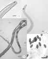
Download high resolution by ftp |
Wet mount preparations of Pseudocapillaria tomentosa. 1. Posterior of male with diminutive bursa (arrow). Bar = 25ìm. 2. Posterior of male with smooth spicule (arrow). Bar = 25 ìm. 3. Female with distinct stichocysts with alternating light and dark bands. Bar = 100 ìm. 4. Eggs with distinctive bipolar plugs. Bar = 100 ìm. |
| 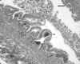
Download high resolution by ftp |
Histological sections of zebrafish with Pseudocapillaria tomentosa infections. Diffuse, severe chronic inflammation, extending from lamina propria (LP) into to visceral cavity. Pa = inflammation in pancreas. Arrow = nematode. Hematoxylin and eosin. Bar = 100 ìm |
We have encountered several diseases of unknown cause (idiopathic etiology) and a few that are related to non-infectious causes. These include egg-associated inflammation and fibroplasia, hepatic megalocytosis, severe dilation of the heart or pericardium, and nephrocalcinosis. In addition, we have seen many neoplasms in zebrafish research facilities. They are discussed in the following section.
This condition occurs in many species of fish held in captivity, and we occasionally observe it in our diagnostic cases. Nephrocalcinosis is the accumulation of calcium deposits in kidney tubules and collecting ducts. Causes of nephrocalcinosis include high CO2 (e.g., > 12 mg/L) in water or excessive levels of calcium and magnesium in the diet. The use of calcium carbonate (rather than sodium bicarbonate) to buffer water in recirculating systems has been associated with the condition (Chen et al. 2001). Only when the lesions are extensive is the condition associated with overt clinical disease. In other words, we see many fish with the condition (diagnosed by histology) in which it was probably not a significant cause of the disease.
Clinical Signs and Gross Pathology. We have not observed macroscopic changes due to nephrocalcinosis in zebrafish. However, with larger fish, kidneys with severe nephrocalcinosis may exhibit distinct, white, opaque deposits in the kidney. The ureters may be filled with a chalk-like material, and vermiform deposits may occur in collecting ducts and tubules.
Microscopy. Histological sections reveal basophilic, crystalline deposits (uroliths), in renal tubules and collecting ducts. The deposits often cause severe dilation of the affected structures.
|
Download high resolution by ftp |
Histological section showing masses of basophilic crystalloid material (arrows) in kidney tubules and collecting ducts |
Diagnosis.
Observation of calcium (basophilic) accumulations in the kidney by histology is generally sufficient for confirmatory diagnosis.Control and Treatment. With zebrafish, high CO2 associated with crowding or the use of calcium carbonate (e.g., crushed coral) are two factors that have the potential to cause nephrocalcinosis. Chen et al. (2001) recommended buffering with sodium bicarbonate. In addition, proper CO2 concentrations should be maintained by proper water exchange and avoiding crowded conditions. Proper atmospheric CO2 levels should be maintained by appropriate ventilation.
Heart Diseases: Pericardial Effusion and Dilated Cardiomyopathy
Clinical Signs and Gross Pathology. The heart region (ventral, posterior to the head) is very swollen. Dissection of the affected area may hemorrhage severely or may reveal large blood clots.
|
Download high resolution by ftp |
Zebrafish with enlarge heart or pericardial effusion, resulting in protrusion in heart region (arrow) |
Microscopy
. Histological sections revealed that the pericardial sac in either severely congested with blood or a proteinaceous exudate. Fish may also present with a ventricle that is extremely dilated and congested.|
Download high resolution by ftp |
Pericardial effusion.
Pericardial sac is enlarged congested with an eosinophilic exudate
(E) (suggesting proteinaous fluid).
V = ventricle of heart |
Diagnosis.
Hemorrhage of the heart at necropsy is strong presumptive evidence. Histology will confirm the diagnosis.Control and Treatment.
The cause of this condition in zebrafish is unknown, and thus at this date we have no recommendations for control.
Egg-Associated Inflammation and Fibroplasia
We frequently observe severe, chronic inflammation in the visceral cavity associated with degenerating eggs in diagnostic cases In the most severe cases, aggressive fibroplasia leading to development of fibromas and fibrosarcomas has been observed. We have named the condition "Egg Associated Inflammation and Fibroplasia" or EAIF. Anecdotal information indicates that it is caused by egg retention, and infectious agents are not usually found in the lesions. Occasionally we observe Mycobacterium spp. within granulomas in these lesions, but these infections are probably not the primary cause.
Clinical Signs and Gross Pathology. Female zebrafish present with a very enlarged abdomen. The ovaries appear as solid, tumor-like mass in the visceral cavity.
Microscopy. Histological examination revels severe, chronic inflammatory changes that originate in the ovaries and may extend throughout the peritoneal cavity. Eggs of varying states (from intact to completely degenerated) are found within the lesion. Prominent fibroplasia often occurs, and in some cases appears to lead to the formation of fibrosarcomas.
|
Download high resolution by ftp |
Histological section of zebrafish with EAIF. Note extensive, chronic
inflammation in ovaries (demarcated by arrows).
E = egg |
Diagnosis. Identification of the condition is based on observing histological changes described above.
Control and Treatment. The precise cause of EAIF is unknown. Because abnormal egg retention is a suspected cause, we recommend timely spawning of females. Holding males and females together may also aid in preventing abnormal egg retention. Striping egg bound females has been tried, but apparently is not reliable for curing the problem.
Hepatic megalocytosis is characterized by tremendous enlargement of the cytoplasm and nuclei of hepatocytes. It is generally thought to be caused by hepatotoxicants, either anthropogenic (Myers et al. 1987) and natural (e.g., algatoxins such as microcystin) (Kent 1990; Andersen et al. 1994). The affected cells are polyploid, resulting from failure of cell division. Exposure to hepatic carcinogens often induces the condition, but the affected cells probably do not go on to develop into neoplasms. We have found that the affected hepatocytes will be present many months after exposure to the agent (Kent 1990). The source of the agent(s) causing hepatic megalocytosis in zebrafish colonies is unknown. As it can be either natural or anthropogenic causes, all possibilities should be considered, including diet
Clinical Signs and Gross Pathology. We have not related direct clinical disease to hepatic megalocytosis, and it is only observed during histological examinations.
Microscopy. Histological sections of the liver reveal massive hypertrophy of the cell and nucleus of individual hepatocytes, at times 10 to 20X, or greater, than normal size. The abnormal hepatocytes are usually found randomly dispersed within the normal liver parenchyma.
|
Download high resolution by ftp |
Hepatic megalocytosis. Note severe enlargement of hepatocyte nuclei and cytoplasm |
Diagnosis. Diagnosis is based on observation of extremely enlarged hepatocyte
nuclei within enlarged cells by histology.
Control and Treatment.
Identification of the agents and their sources are required before we can recommend treatment or avoidance strategies.
Copper poisoning may occur by leaching of copper from piping systems, particularly new systems. The toxicity of copper is effected by water hardness - i.e., copper is more toxic in soft water (see review by Olsson (1999). Acute toxicity goldfish 96-h LC50 was 1.38 mg/L at water hardness of 273 CaCO3 (a relatively hard water situation).
Clinical Signs and Gross Pathology. Affected fish may show increased coughing reflex, ventilation rate and oxygen consumption, and decreased antibody production. The latter indicates that affected fish would be more susceptible to infectious diseases. Fish may also be lethargic or uncoordinated. Particularly important to zebrafish, is that copper causes retarded sexual development, reduced egg production, and progeny show poor survival and tetratogenic effects (Dave and Xiu 1991; Olsson 1998).
Microscopy.
Microscopic changes include gill lesions and lateral line damage (Gardner and LaRoche 1973). The liver may exhibit vacuolation of hepatocytes.
Many research facilities use flow through or partially closed systems in which dechlorinated city water is used as the water supply. This certainly is an advantage for avoiding many pathogens. However, failure of the dechlorination system often results in severe mortality due to either acute or chronic chlorine toxicity. Fish are very susceptible to chlorine. City water usually contains a minimum of 0.2mg/L total chlorine but usually ranges between 0.5 –1.0 mg/L (Noga 1996). Chlorine is also routinely used to disinfect tanks and equipment, and inadequate rinsing or ventilation is another potential source of chlorine toxicity.
Clinical Signs and Gross Pathology. Chlorine causes severe, acute necrosis of the gills, and thus fish suffer rapid respiratory distress and asphyxiation. Fish may exhibit laboured breathing, and petechial hemorrhages around the head. Cherry-red, swollen gills are characteristics of chlorine toxicity
Microscopy. Microscopic examination shows severe necrosis of the gills.
Diagnosis. Chlorine toxicity is diagnosed by detecting elevated chlorine levels in the water. "After the fact" exposure is suspect in fish showing the signs described above.
Control and Treatment. Chlorine is avoided by removal with charcoal filters (for running water). For static systems, chlorine can be removed by adding sodium thiosulfate at 7.4 ppm/chlorine ppm). Mortalities in exposed fish can be reduced by adding salt to the water and by assuring that the water is adequately aerated. In addition, fish should be immediately transferred to chlorine-free, aerated water.
Ammonia and nitrite toxicity is covered in several text books on aquaculture, aquariology, and fish health (e.g., Noga 1996). Articles that review the specific subjects include Lang et al. (1987) and Speare (1998b). Ammonia toxicity is particularly problematic in newly established recirculating systems, in shipping containers, or following medication of fish by bath treatments with certain chemicals (e.g., formalin).
Clinical Signs and Macroscopic Changes.
Fish suffering ammonia toxicity may exhibit behavioral abnormalities, such as hyperexcitability, anorexia, reduced growth, and increased susceptibility to pathogens. Other changes include decreased ventilation. In salmonids, sublethal effects as low as 0.002 mg/L have been reported.Microscopic Changes. Chronic ammonia toxicity is often associated with hyperplasia of the gill epithelium. However, some researchers report that this histopathological change is caused by other agents (either abiotic or biological) that are often associated with husbandry conditions (e.g., excessive crowding, inappropriate water exchange) that lead to elevated ammonia levels (Lang et al. 1987).
Diagnosis. As the clinical signs and pathological changes of ammonia toxicity are rather non-specific, identification of the problem relies on detection of elevated ammonia levels.
Control and Treatment. Improving water flow and reduction in fish densities are the immediate solutions to NH3 toxicity. Changing water or increasing water flow usually increases pH, and ammonia is more toxic at higher pH. Ammonia toxicity often occurs in new recirculation systems with biological filters as it may take several weeks to establish adequate denitrifying bacteria in the filters. Therefore, fish should be added gradually to new systems, with close monitoring of ammonia levels.
Nitrite toxicity is less common in aquaria situations than ammonia toxicity, but can occur simultaneously. It is more common in ponds – e.g., nitrite toxicity is the cause of brown blood disease in catfish, in which case methemoglobin production by chemical oxidation of heme iron results in haemoglobin incapable of combining with oxygen, thus hypoxia occurs (Speare 1998a). Levels of nitrite should be kept below < 0.10 mg/L.
Gas bubble disease (GBD) occurs when fish are exposed to local dissolved gas concentrations exceeding the stable maximum dissolved gas levels for the local temperature, salinity, and pressure conditions (supersaturated conditions). If this condition is not corrected fast enough or if it is too far out of equilibrium, the gas dissolved in the water in excess of equilibrium will be released from solution. After exposure to these conditions, the fish’s internal body fluids can also become unstably supersaturated with gases. These excess gases can then be released from solution as bubbles, resulting in tissue damage. Gas bubble disease afflicts both wild and cultured fish in variety of conditions. See reviews by Weitkamp and Katz (1980) and Speare (1998).
A variety of scenarios can cause supersaturation, including air injection into water in pressurized pipes (Venturi effect), and pumping water from deep wells and exposing fish to such water without prior gas "stripping". Supersaturation by nitrogen is generally the culprit, but oxygen alone (i.e., in systems using oxygen injection) may cause GBD. With zebrafish research systems, the cause is often a leaky pipe on the suction side of the pump, which causes air injection.Clinical Signs and Macroscopic Changes. Severe, acute GBD may cause macroscopically visible bubbles in the skin, fins or gills. The eyes are also a target organ, in which visible bubbles form in the retrobulbar tissues. Fish may exhibit exophthalmia. Unfortunately, many cases of GDB do not present with specific clinical or pathological changes – i.e., fish die without visible bubbles in the tissues. Fish may exhibit exophthalmia. Fish that recover sublethal GDB may be susceptible to infectious diseases.
Microscopy. When present, histological sections may reveal bubbles, particularly in the retrobulbar tissues. Bubbles occur within blood vessels and cause vascular occlusions, leading to formation of thrombi and possibly hemorrhage. Gas bubbles may be visible in gill blood vessels in wet mounts.
| 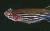
Download high resolution by ftp |
Zebrafish with gas bubbles around eye due to GBD |
| 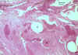
Download high resolution by ftp |
Retrobulbar tissue of the eye from
opakapaka (Pristipomoides filamentosus), a deep water
snapper, with GBD.
H = hemorrhage |
Diagnosis. Gas bubble disease is detected by observing superasatuarion of O2 or N2 in the water holding fish. Gas bubbles may be observed in wet mount preparations of the skin, gills or internal organs.
Control and Treatment.
Gas bubble disease is controlled by identification of the source and rectifying the problem. There are saturometers and tensiometers for spot use in measuring for supersaturated gases in the water. Unfortunately, they do not work well for continuous process-type use as an alarm system. There are possible alternatives that could provide an indirect indication of this problem with process instruments (instruments for continuous monitoring of the water conditions). Less direct monitoring can be provided by a DO (dissolved oxygen) or ORP (oxidation-reduction potential; as a general indicator of a water change) meters either downstream of the last pump before the water goes to the fish in a recirculating water system or in a flow through system in the plumbing leading directly to the tanks. Change detected by these instruments could be due to supersaturation, or other causes. It could provide a preliminary indication of a problem, but further investigations are required to verify the cause and they may not be sensitive enough to identify all problems.
In comparison to rodents and other mammalian species, little information is available regarding the incidences or histological types of neoplasia occurring in various wild-type or mutant lines of zebrafish. Based on data from laboratory rodent colonies, we expect incidences and histological types of neoplasia in zebrafish to vary widely among different wild-type and mutant lines.
Pioneering work by Dr. Mearle Stanton of the National Cancer Institute in the 1960s was the first research demonstrating experimental carcinogenesis in fish. This work showed that the zebrafish developed liver neoplasia after exposure to diethylnitrosamine or methylazoxymethanol acetate (Stanton 1965; Stanton 1966). In a 5-year U.S. Army-funded study of neoplasia induced by a panel of structurally diverse carcinogens, Drs. Jan Spitsbergen and Jerry Hendricks of Oregon State University showed that zebrafish of a Florida wild-type line (from a commercial wholesaler) are quite responsive to most carcinogens if exposed early in life. Liver was the most commonly targeted organ in these carcinogen studies with zebrafish, but as with other carcinogenesis studies in small aquarium fish (Bunton 1996), a wide variety of epithelial, mesenchymal, neural, and neural crest neoplasia occurred in fish exposed to many of the carcinogens (Hendricks 1996; Spitsbergen et al. 2000a; Spitsbergen et al. 2000b; Spitsbergen et al., 1997). A recent study at Pennsylvania State University found a 100% incidence of cutaneous papillomas in 18 zebrafish by 1 year after three immersion exposures at the adult stage to 2.5-3 mM ethylnitrosourea. The strain of zebrafish used in this papilloma study was not specified, but was presumably Florida wild-type as they were obtained from North American wholesaler.
At Oregon State University, the spontaneous rate of neoplasia in the Florida wild-type line fed a semi-purified diet and held in a flow-through system was approximately 1% at 6-14 months of age based on 3,000 untreated control fish. The most common spontaneous neoplasms at 6-14 months of age were seminoma, hepatocellular adenoma, and adenoma of exocrine pancreas, with intestinal adenocarcinoma being less common. A study of 21 Florida wild-type zebrafish over 18 months of age by Dr. Gary Marty indicated that 44% of males had marked hyperplasia or neoplasia of seminiferous epithelium of testis (Dr. Gary Marty, School Vet. Med. U.C. Calif., Davis, pers. comm.).
Current Studies of Neoplasia in Zebrafish at the University of Oregon and Oregon State University
Beginning in 2001, a collaborative study of causes of spontaneous neoplasia in zebrafish is being conducted by Drs. Jan Spitsbergen and Michael Kent of Oregon State University and Dr. Monte Westerfield of the University of Oregon. Their goals are to establish baseline information on the incidences and histological types of spontaneous neoplasia occurring in various wild-type and mutant lines of zebrafish, and to determine the relative roles of genetic factors, infectious diseases, dietary factors and other environmental and husbandry factors in contributing to neoplasia in zebrafish. We are conducting histological examination of retired broodstock to determine incidences and histological types of neoplasia in various lines of zebrafish. We are comparing spontaneous incidences of neoplasia at 2 years of age in groups of wild type (AB line) fed different diets. We are also investigating evidence of viral agents in zebrafish neoplasms by a variety of methods including virus isolation attempts in cell culture, tumor transmission trials and ultrastructural studies of tumor tissue and tumor cell lines.
Neoplasia in Diagnostic Cases Submitted to the Zebrafish International Resource Center
Until 2001, retired broodstock from the Eugene zebrafish colony have not been routinely examined by histology. However, moribund fish and fish exhibiting grossly visible masses or other pathologic lesions have been studied by Dr. Kent since 1994. Also since 1999, the Zebrafish International Resource Center has coordinated a diagnostic service to evaluate zebrafish health problems. Several neoplasms have been diagnosed in cases submitted through this service. Including diagnostic cases from the University of Oregon and submissions from other research centers, the most common target tissues for spontaneous neoplasia are testis, gut, thyroid, liver, peripheral nerve, connective tissue, and the ultimobranchial gland. Less common target tissues include, blood vessels, brain, gill, nasal epithelium and the lymphomyeloid system.
Although we are just beginning to accumulate data regarding age-specific incidences of neoplasia in various lines of zebrafish, it is clear that the incidence of neoplasia increases strongly with age over one year in the lines examined. For example, the incidence of seminomas (neoplasms of the seminiferous epithelium of testis) is typically less than 1% in fish of all lines examined so far at less than 1 year of age. But the incidence of seminomas increases to approximately 40% by two years of age or more.
The following are descriptions of the common neoplasms that we have observed at our facilities in Oregon and from diagnostic cases from other research facilities.
Macroscopic Changes.
Seminomas are the most common spontaneous neoplasms observed in our diagnostic cases. In older broodstock, these neoplasms are often huge in size, causing marked abdominal distention, and constituting about half of the body mass. These neoplasms are typically soft, white, multilobulated masses and, in our experience, have always been confined to the testis.
|
Download high resolution by ftp |
Seminoma. These neoplasms are usually lobate, and have a glistening appearance |
Microscopic Changes
Unlike most seminomas of mammals which are comprised principally of a monotonous sheet of germ cells, most seminomas of fish are spermatocytic seminomas with extensive differentiation of germ cells into various developmental stages up to sperm (Hawkins et al. 1996). Small seminomas may be comprised of a single lobule of proliferative seminiferous epithelium compressing the surrounding normal testicular tissue. Large seminomas may be multilobular. Various ratios of primordial germ cells to differentiating spermatocytes and spermatids may occur in different seminomas. Most of the seminomas that we have seen are well differentiated, with histological structures evident that are typically found in normal testes.
|
Download high resolution by ftp |
Seminoma. Note spermatocytes and spermatids are present |
Macroscopic Changes
These cases are most commonly recognized only on histology. In extreme cases, a visceral mass may be observed on necropsy which is soft to firm and tan in color. Intestinal carcinomas occur most commonly in the anterior portion of the intestine, just distal to the esophagus (zebrafish have no stomach). The capillarid nematode Pseudocapillaria tomentosa may be a promoter of these neoplasms (see section on Pseudocapillaria and Kent et al. 2002).
Microscopic Changes
These neoplasms may vary from small focal, relatively well-differentiated neoplasms forming acini to large highly invasive neoplasms comprised of poorly differentiated small round malignant epithelial cells (small cell carcinoma). Poorly differentiated neoplasms may extensively invade adjacent pancreas and viscera.
| 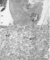
Download high resolution by ftp |
Intestinal Neoplasia.
A. Transmural mixed malignant neoplasm of distal intestine associated with an infection by Pseudocapillaria. The mass is comprised of an admixture of malignant smooth muscle cells and clusters of ascini of malignant enteric epithelium. A1. Profiles of the nematode (P) are evident in the mucosal epithelium, and moderate to severe hyperplasia of the mucosal epithelium is evident in the segment of bowel surrounding the parasite. Increased numbers of lymphocytes and macrophages are evident in the lamina propria and submucosa subjacent to the parasite. A2. Higher magnification demonstrates clusters of malignant epithelial cells (arrows) admixed with proliferating malignant smooth muscle (spindle) cells. Hematoxylin and eosin. Bars = 20 ìm. |
| 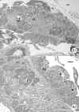
Download high resolution by ftp |
Intestinal Neoplasia B. Adenocarcinoma of intestine associated with Pseudocapillaria infection. B1. Severe diffuse hyperplasia and dysplasia of mucosal epithelium of intestine associated with intraepithelial profiles of nematodes (P). Moderate diffuse nonsuppurative inflammation is present throughout the mucosa and submucosa, as well as covering the serosal surface. B2, Higher magnification reveals irregular clusters of malignant enterocytes (arrows) are admixed with normal exocrine pancreas (Pa) along the serosal surfaces of the intestine. Note hyperplasia and dysplasia of intestinal epithelium (E) and high mitotic rate. |
The ultimobranchial gland is an endocrine structure that occurs transiently during the development of mammals, but remains a distinct organ in adult fish and birds. This gland of fish is the counterpart to the thyroid C cells (medullary thyroid tissue) in mammals. Like C cells, the ultimobranchial gland secretes calcitonin to regulate blood calcium levels. Studies of both diagnostic cases from moribund fish and retired broodstock indicate that the incidence of ultimobrachial neoplasia increases substantially in fish over 1.5 year of age. In most lines of zebrafish, we typically do not see a mass grossly in fish affected by ultimobranchial tumors, but usually detect this tumor during histologic studies. Because both seminomas and ultimobranchial tumors are common in male fish over 1.5 year of age, we often see these tumors together in older males. We have seen several cases in the Tübingen long fin line [also called TUP longfin, TL, leopard (leo) long fin (lof)] in which the abdomen was grossly distended due to marked enlargement of the spleen in fish with ultimobranchial neoplasia. In these cases the spleen was up to 30X normal size, with cystic degeneration, perhaps due to passive congestion. Ascites also occurred in some cases. The TL line raised in standard husbandry systems on commercial diets seems prone to develop ultimobranchial tumors at a relatively young age, with some neoplasms seen by 6 months of age.
Macroscopic Changes
We have only detected these neoplasms by histology.
Microscopic Changes
The normal ultimobranchial gland of the zebrafish is a small ovoid organ located between the heart and the esophagus. Because of the small size of the normal organ, we must typically cut many step sections through the midline region of a fish to obtain reliable sections of the ultimobranchial gland. The normal gland consists of a cluster of acini lined by tall columnar cells, with basally located nuclei. Neoplastic ultimobranchial glands may be enlarged up to 50X normal size. It is remarkable that fish can tolerate such large masses compressing or invading the heart. Neoplastic ultimobranchial cells lose their tall columnar structure and acinar arrangement, forming packets or monotonous sheets of ovoid to polygonal neuroendocrine cells. Malignant neoplasms are composed of less differentiated epithelial cells which invade through the fine fibrous capsule which surrounds the normal gland. We have observed several cases in which large ultimobranchial carcinomas have invaded into the sinus venosus of the heart.
|
Download high resolution by ftp |
A.
Ultimobranchial tumor (arrow).
B. Normal ultimobranchial organ (arrow), located between the heart and the esophagus. H = heart, E = esophagus |
Macroscopic Changes
These neoplasms occur as soft white, often multilobulated masses on the ventral aspect of the lower jaw. Thyroid neoplasia must be differentiated from goiter histologically. Goiter in fish can occur when diets and the aquatic environment are low in iodine or when goitrogenic chemicals are present. Goiter can present with very large masses on the ventral jaw and surrounding the gills.
Microscopic Changes
Histological diagnosis of benign and malignant thyroid neoplasia in fish has been controversial because, unlike the thyroid in mammals which is encapsulated, in fish, most thyroid follicles occur diffusely in connective tissue surrounding the ventral aorta in the lower jaw. In certain fish species, normal thyroid tissue can occur in a variety of locations including spleen and anterior kidney (Hoover, 1984). In our experience, normal thyroid tissue of the zebrafish is confined to the vicinity of the ventral aorta of the lower jaw. Several diagnostic cases of thyroid neoplasia that we have described have included foci of highly anaplastic epithelial cells which are clearly malignant histologically, and in certain cases have invaded many tissues throughout the body. These cases have been confirmed as malignant thyroid adenocarcinomas by Dr. John Harshbarger of the Registry of Tumors in Lower Animals.
|
Download high resolution by ftp |
Thyroid adenocarcinoma
A. Anaplastic thyroid tumor, center of lesion (arrow) demonstrates typical thyroid follicles. B. High magnification showing poorly differentiated neoplastic cells |
Macroscopic Changes
Benign or malignant hepatocellular neoplasms (hepatocellular adenoma or hepatocellular carcinoma) have been the most commonly observed hepatic neoplasms in diagnostic cases. These neoplasms are soft white to tan masses that may be single or multiple in the liver, and may bulge above the surface of normal hepatic tissue. Liver tumors are frequently observed in fish exposed to chemical carcinogens, in both lab studies or in fish from polluted water. However, we have also seen liver tumors in zebrafish with no known history of exposure to carcinogens.
|
Download high resolution by ftp |
Zebrafish with hepatocellular carcinoma. Liver is enlarged and has large, whitish nodules. |
Microscopic Changes
Hepatocellular adenomas are neoplasms comprised of well-differentiated hepatocytes that maintain their normal orientation into hepatic plates, but which form proliferative masses compressing surrounding hepatic parenchyma. Hepatocellular carcinomas are comprised of more anaplastic hepatocytes, which have typically lost their normal organization into hepatic plates and often extensively invade into surrounding normal hepatic tissue.
These neoplasms are often associated with foci of hepatocellular alteration. These are clusters of hepatocytes that stain differently from normal hepatocytes, such as a cytoplasm that is more eosinophilic, more basophilic or more vacuolated due to glycogen accumulation. However, they maintain their normal orientation into hepatic plates and do not compress the surrounding parenchyma. Carcinogenesis studies in mammals and fish indicate that these foci of hepatocellular alteration are often precursors to hepatic neoplasms. Another liver tumor that is not uncommon in fish are those with a biliary origin – e.g., choangiocelluar carcinomas, biliary carcinomas.
|
Download high resolution by ftp |
Liver neoplasms and
altered foci. Zebrafish liver exposed to the carcinogen DMBA. Arrows demark a
large hepatocellular carcinoma. In the center of the section is a biliary
carcinoma (B), characterized by abnormal proliferation of bile ductules.
V = altered foci of vacuolated hepatocytes. Arrows with "N" indicates normal liver tissues. |
Macroscopic Changes
These lesions may occur in viscera, skeletal muscle, or behind the eye, causing exophthalmia, often as whitish, solid masses. It should be noted that other tumors (e.g., capillary hemangiomas) may also occur in the eye socket .
|
Download high resolution by ftp |
Spindle cell sarcomas. A. Zebrafish with capillary hemangioma behind eye. Tumor growth has caused prominent exophthalmia. |
|
Download high resolution by ftp |
B. Large fibrosarcoma in the flank of a zebrafish.
Top shows intact fish with tumor protruding from side. Lower image shows fibrosarcoma (F) in dissected fish. |
Microscopic Changes
Fibrosarcomas (malignant neoplasms of fibroblasts), leiomyosarcomas (malignant neoplasms of smooth muscle), and malignant nerve sheath neoplasms are difficult to distinguish from one another grossly, and when poorly differentiated, they may also be difficult to distinguish histologically. Therefore, the collective term "spindle cell sarcoma" is often used when the precise cell type of the tumor cannot be discerned. We have observed many neoplasms showing cellular architecture consistent with both neural fibrosarcomas and fibrosarcomas.
| 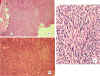
Download high resolution by ftp |
Spindle Cell
Sarcomas.
A, B. Spindle cell sarcoma invading the skeletal muscle. Lesion pattern consistent with nerve sheath components – i.e., the cellular architecture arranged in Antoni A pattern (i.e., paint brush appearance) C. Fibrosarcoma from muscle, with more random arrangement of spindle cells. |
| 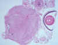
Download high resolution by ftp |
Massive peripheral nerve sheath tumor of the eye. |
While most eye tumors that we have seen fall within the collective name "spindle cell sarcomas", we have also observed capillary hemangiomas in the retro-bulbar tissues .
|
Download high resolution by ftp |
Capillary hemangioma from behind the eye of a zebrafish. The tumor is well vascularized, which is characteristic of these neoplasms, as demonstrated in at higher magnification (B) |
95% ethanol 300 ml
formalin 200 ml
glacial acetic acid 100 ml
distilled water 300 ml
95% ethanol30 mL
formalin10 mL
glacial acetic acid 2 mL
distilled water58 mL
100 mL total
Solution A 2.62 % NaH2PO4
Solution B 2.52 % NaOH
Working solution:
Mix 83 ml Solution A with 17 ml Solution B.
Adjust pH to 7.4 with 10 N NaOH or concentrated HCl.
For transmission electron microscopy of fish tissues, we generally prepare 4% glutaraldehyde in Millonig's buffer. Fix small pieces of tissue at room temperature for 2 h, then hold overnight at 4 0C. Transfer to Millonig's buffer without glutaraldehyde.
tryptone 0.5 g
yeast extract 0.5 g
sodium acetate 0.2 g
beef extract 0.2 g
agar 11.0 g
add above to:
distilled water 1 liter
autoclave and pour into sterile petri dishes
This stain is useful for examining protozoa, bacteria and cell morphology in tissue imprints and blood smears. Pre-made commercial products, such as Diff-Quik (Dade Behring AG, Newark, DE) http://www.dadebehring.com/ are nearly equivalent.
Add 1 g Leishman's stain to 500 ml absolute methanol and filter.Leishman's
Giemsa Stock Solution
Add 1 g powder to 66 ml
to glycerol and heat at 60 0C for one hour. Then add 66 ml of
absolute methanol and filter. Store at 40C.
Phosphate Buffer Solutions
Solution A - 31.20 g NaH2PO4 , 2 H20 in 1 L distilled water
Solution B - 53.65 g Na2HPO4 , 7 H20 in 1 L distilled water
Giemsa Working Solution
To prepare phosphate buffer, mix 73.5 ml solution A with 26.5
ml solution B. Then add 100 ml distilled water. Add 3.5 ml stock solution to 50 ml phosphate buffer (pH 6.4).
Make fresh for each use.
Staining Procedure:
Prepare smear or imprint and allow to dry for about 1/2 hour.
Fix in methanol for 2-5 min.
Stain in Leishman's for 2-3 min.
Stain in Giemsa for 10-12 min.
Rinse in distilled water for about 1 min.
Air dry.
Adult zebrafish are often difficult to section without first softening their skin and scales. The day before processing, transfer the fixed fish to 5% trichloroacetic acid (TCA) in Dietrich’s fixative, and place on rotor overnight. TCA will soften the scales and skin, presumably by cleaving the keratin proteins. In addition, TCA will decalcify, softening the bones. Unfortunately, TCA is a fairly strong acid and will corrode the tissue processor. The fish must be thoroughly rinsed to remove any TCA before the fish can be processed.
PROTOCOL:
Transfer fish to 5% TCA in Dietrich’s fixative. Place on rotor overnight.
The next day, replace TCA-containing Dietrich’s with 70% ethanol and place on
rotor for 10 minutes. Repeat 2xs for a total rinse time of 30 minutes. Replace
last rinse with fresh 70% ethanol. The fish are then bisected along their length
before they are processed. Using a fresh razor blade, make the cut parallel to
and on the left side of the spinal cord. The bisected fish are now ready to load
into cassettes for processing.
If you want serial sections, embed in Paraplast as this paraffin provides for better ribboning.
Cut 7 ìm sections with a high-profile disposable blade (AccuEdge blades -- made by Sakura-Finetek, sold through VWR -- are reportedly the best) . If the large fish are difficult to cut, soak the block face in ice-cold Mollifex. Usually one to two hours is sufficient but an overnight soak is fine for stubborn samples.
Sections of gills, spinal cord and internal organs will be needed for proper pathological evaluation. Because the fish has been cut to one side of the spinal cord, you will be cutting toward the midline on one half of the fish, and away from the midline on the other. With any luck, you will need to collect only one ribbon containing gills (one bisected half) and spinal cord (the other bisected half), along with a nice sampling of internal organs. Samples of the skin or fins may also be requested, depending on the reported symptoms.
Mollifex: 54 mL 95% ethanol, 10 mL glycerol, 36 mL water
Store fixative at room temperature.
The following is a staining protocol perfected by Karen Larison at ZIRC that we routinely use for zebrafish histopathology. Any water stage is a good stopping point if you had to do something part way through the procedure. Keep the slides wet throughout the procedure.
At this point the sections will look blue.
* Filter Hematoxylin before each use. Make fresh batch every 2-3 months.
** 200 ul concentrated HCl in 200 mL 70% ethanol
*** Water and lithium carbonate (approx 2 tablespoons, supersaturated)
**** Make fresh eosin Y- phloxine B solutions from stock every 1-2 weeks.
***** Use fresh isopropanol for the 6th wash. Discard the 1st (and pinkest)
isopropyl. Rinse in isopropyl waste container after each staining session. Store
other used rinses in bottles 1-5 (pinkest to clearest) for future use.
The hematoxylin is dissolved in the absolute alcohol, and then added to the alum, which has previously been dissolved in the warm distilled water in a 2-liter flask. The mixture is rapidly brought to a boil and sodium iodate is then slowly and carefully added. The stain is rapidly cooled by plunging the flask into cold water or into a sink containing chipped ice. When the solution is cold, the acetic acid is added, and the stain is ready for immediate use.

{kind=link}
{kind=link}
{kind=link}
{kind=link}
{kind=link}
{kind=link}
{kind=link}
{kind=link}
{kind=link}
{kind=link}
{kind=link}
{kind=link}
{kind=link}
{kind=link}
{kind=link}
{kind=link}
{kind=link}
{kind=link}
{kind=link}
{kind=link}
{kind=link}
{kind=link}
{kind=link}
{kind=link}
{kind=link}
{kind=link}
{kind=link}
{kind=link}
{kind=link}
{kind=link}
{kind=link}
{kind=link}
{kind=link}
{kind=link}
{kind=link}